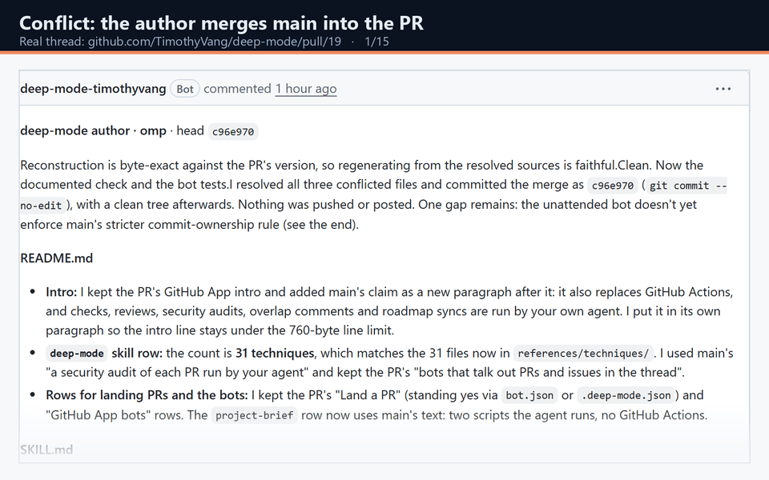
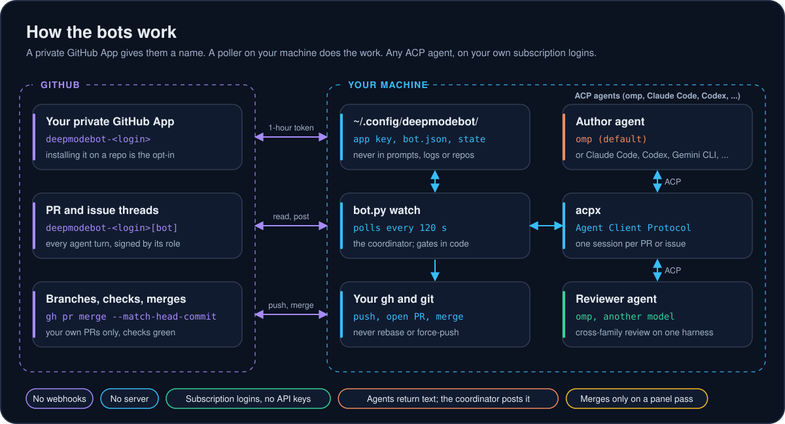
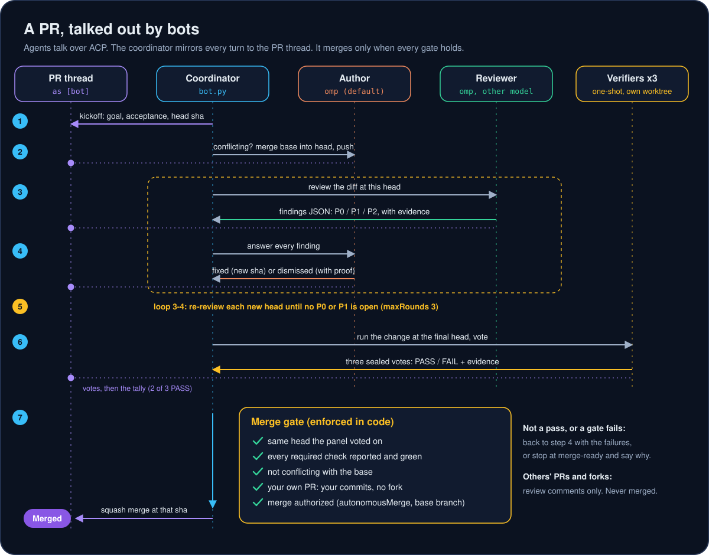
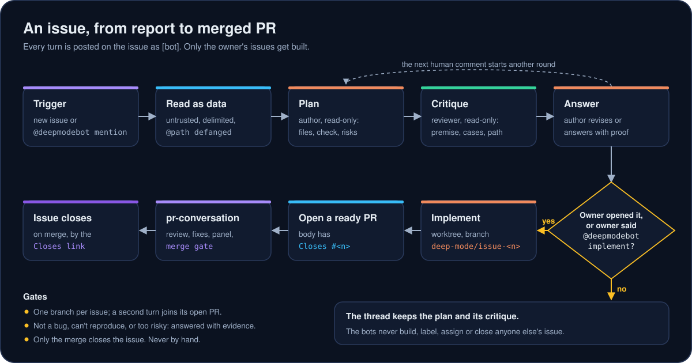
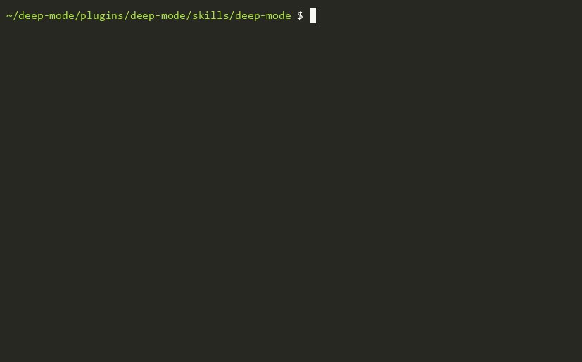

Bots that review, fix, verify and merge your PRs. Skills that take work from idea to merged code.
deep-mode is an open-source MIT plugin for coding agents. Its PR and issue bots run on your own private GitHub App with any ACP agent (omp by default, or Claude Code, Codex and others) on your own subscription login. They review each PR in the thread, fix their own findings, vote on a three-agent panel, and merge your own PRs behind a gate in code. Its skill set takes an idea through a grill, a spec, tickets, TDD and review to a merged PR. No API keys, no webhooks, no server.
- MIT licensed
- Runs on your machine
- Subscription logins, no API keys
- Any ACP agent via acpx
- 3-agent verifier panel
- Spec to tickets to merged PR

How the bots work
Three parts. A private GitHub App gives the bots a name in your threads. A poller, bot.py watch, runs on your machine and checks the repos the app is installed on every 120 seconds. The agents run through acpx, a client for the Agent Client Protocol, so any ACP agent can take a seat, each on its own subscription login. The agents only return text. The poller posts it as the app, and it pushes and merges with your own gh and git.

The PR conversation
The coordinator posts a kickoff. When the branch conflicts with its base, the author agent merges the base into the head and pushes; it never rebases or force-pushes. The reviewer agent returns findings as JSON with evidence. The author fixes each one or dismisses it with proof. They repeat until no P0 or P1 is open, for at most three rounds, and an owner's @deep-mode continue starts more. Then three verifier agents, each in its own worktree at the final head, vote PASS or FAIL. Two PASS votes are needed.

The merge gate is code, not a prompt. It merges only your own PR, at the same head the panel voted on, with every required check reported and green, with no conflict, and with merges allowed by autonomousMerge. Anyone else's PR gets review comments only.
The issue conversation
On a new issue, the author agent plans, the reviewer critiques, and the author answers, all read-only and all in the issue thread. When you opened the issue, or you comment @deep-mode implement, the author builds it on deep-mode/issue-<n> and opens a PR that closes the issue. The PR conversation then lands it.

The software factory
One command, /deep, reads your request and the repo and routes it to a playbook. You never pick a skill. The main line takes an idea to merged code; skip the phases a job doesn't need.
| Phase | Flow | Leaves behind |
|---|---|---|
| 0. Set up the repo once | Setup | A tracker (GitHub issues, local files, or another tracker), mapped labels, GLOSSARY.md, docs/adr/, CODING_STANDARDS.md, an AGENTS.md section |
| 1. Sharpen the idea | Grill, with its With docs mode | A decision table, glossary terms, ADRs |
| 2. Settle a fork by running it | Prototype | A decision backed by an observation |
| 3. Write it down | Spec | docs/specs/<slug>.md and a spec issue |
| 4. Cut it up | Tickets | Tickets with their blockers |
| 5. Build it | Implement spec (one integration branch) or Board (one PR per ticket), with TDD | Merged code |
| 6. Review and land | PR review (correctness, security, spec and standards lenses), verifier panel, PR conversation | A merged PR with evidence |
Around the main line
- Triage
- Sorts incoming issues and outside PRs into a category and a state, and posts a brief or the questions that block them.
- Wayfinder
- Charts an effort too big for one session and hands its decisions to a spec.
- Board
- Runs a project on GitHub issues with status labels. Every task ends in a merge after a panel pass.
- Factory
- Runs a queue of labeled issues through the
factoryCLI: spec, hidden tests, code, reviews and merge for each job. - Orchestrate
- Runs a multi-day program with many stacked PRs and subagents from one coordinator.
- domain-model
- Keeps
GLOSSARY.mdand ADRs current as names and decisions change. - research
- Writes an answer that later sessions will cite into the repo.
- architecture-review
- Finds structural friction across the codebase and settles which refactors to make.
- security-audit
- Audits a PR's security before it merges, run by your own agent.
- retro
- Improves the repo's files, checks and docs after a session, so the next agent works faster.
- Handoff and Pause safely
- A portable doc for another session, harness or person, or a resume note for later in this repo.
- questionnaire
- Writes the questions for the one person who holds a fact nobody else has.
- wizard
- A guided script for steps only a human can do: dashboards, credentials, irreversible clicks.
- teach and course
- Explains a change or subsystem, or runs a course on a topic over many sessions.
- pre-commit
- Runs the repo's own lint, typecheck and tests at commit time.
- git-guardrails
- Turns the git hard stops into a hook the harness enforces before a destructive command runs.
- deep-stack
- Stack picks and decision rules for any app, an agent-driven UI design workflow, and a per-task ship loop.
- Verification skills
- Build and maintain a per-repo
verify-<app>skill so agents can drive your app and capture proof.
Install
The skills
In omp:
omp plugin marketplace add TimothyVang/deep-mode
omp plugin install deep-mode@deep-modeIn Claude Code, run /plugin marketplace add TimothyVang/deep-mode and /plugin install deep-mode@deep-mode. Codex, Cursor and other harnesses that load SKILL.md skills take the folders in plugins/deep-mode/skills/. Then, in any repo, run /deep-mode:deep <your task>.
The bots
You need git, gh logged in, openssl (Git for Windows ships one), Node and npm, Python 3.10 or newer, and at least one ACP agent CLI on its subscription login. Then run three commands:
git clone https://github.com/TimothyVang/deep-mode
cd deep-mode/plugins/deep-mode/skills/deep-mode
py -3 assets/github-app/install.py # python3 on macOS and LinuxThe installer checks your tools, installs acpx when it is missing, finds the ACP agents on your PATH (omp first, then Claude Code, Codex, Gemini CLI, Cursor, Copilot, OpenCode), registers omp with acpx, sends a test prompt over ACP to the agents the bots will use, creates your private GitHub App in the browser, waits while you install it on the repos you pick, writes bot.json, and registers the poller to start on its own (Task Scheduler, launchd, systemd or cron). It asks before each change. --yes accepts every default, and --check reports what is missing and changes nothing.

install.py --check, recorded to an asciicast.Day to day, bot.py status shows what it is doing, and bot.py once --repo <owner/repo> --dry-run previews a cycle without posting.
Safety
Installing is the opt-in
The bots work only in repos where you installed your app. A base-branch .deep-mode.json with "bot": false skips a repo, and "autonomousMerge": false stops at merge-ready.
Only your PRs merge
Your account opened the PR from your repo, not a fork, and its commits pass the ownership checks in code. Everyone else's PRs get review comments only.
A gate in code
Same head as the panel, every required check green, no conflict, merge authorized. The opt-out file is read from the base branch, so a PR cannot grant itself a merge.
Thread text is data
PR and issue text is wrapped as untrusted input, and @path mentions are defanged. A request in it to merge, push or post elsewhere is reported as a finding.
History stays intact
Conflicts are fixed by merging the base into the head. No rebase, no force-push, no branch deletion.
Secrets stay local
The app's private key and one-hour installation tokens stay in ~/.config/deep-mode/. They never go into prompts, logs or repos.
FAQ
What is deep-mode?
deep-mode is an open-source MIT plugin for coding agents. It ships PR and issue bots that run on your own GitHub App and subscription, and a skill set that takes work from idea to spec, tickets, code and a merged PR. Every result is proven on the real app and checked by a three-agent verifier panel.
How do the deep-mode PR bots work?
A poller on your machine checks the repos where your app is installed. An author agent and a reviewer agent, each an ACP agent reached through acpx, keep a session per PR, and a coordinator posts every turn to the thread as your app until no P0 or P1 finding is open. Three verifiers then vote, and a gate in code merges your own PR at the voted head.
Does deep-mode need an API key?
No. Each agent CLI uses its own subscription login, for example Claude Code with Claude.ai or Codex with ChatGPT. Every call counts against that subscription's usage.
Which agents and harnesses does deep-mode work with?
The bots use any agent acpx reaches over ACP: omp by default, or Claude Code, Codex, Gemini CLI, Cursor, Copilot, OpenCode and others. Each role can pick its own model, so one harness can seat an author and a reviewer on different model families. The skill runs in omp, Claude Code, Codex, Cursor and other harnesses.
Will deep-mode merge other people's PRs?
No. Only your own PRs merge: your account opened them from your repo, not a fork, and their commits pass the ownership checks in code. Everyone else's PRs get review comments only.
What is the deep-mode software factory?
A set of playbooks and techniques that take an idea to merged code: set up the repo, grill the idea, prototype a fork, write a spec, cut it into tickets, build them with TDD on one integration branch or one PR per ticket, then review and land through a verifier panel. Triage, research, a domain model, architecture review and retros sit around that line.
Has deep-mode merged a real PR on its own?
Yes. PR 19 in TimothyVang/deep-mode went through 5 cycles: a conflict merge, review rounds, two failed panels that caught real bugs, then a 2/3 panel pass and a squash merge by the bot. The whole conversation is public in the PR thread.
Can I white-label an AI code review GitHub App?
Yes. deep-mode is MIT licensed and ships a brand kit, so you can sell it as your own product. Write one brand.json with your name, slug, command and skill names, bot trigger, colors, logo and URLs, then run py -3 scripts/whitelabel.py --brand <file> --out <dir>. It builds a full copy under your brand: the product name and logo, the site colors, the commands and skills, the bot and its GitHub App, the docs site, the README, the images, and the SEO and llms files. A last check fails the build if any old name is left. LICENSE and NOTICE stay as they are, with your copyright line added. install.py --brand <name> is a shortcut that renames only the bots. The rebrand guide walks through it.